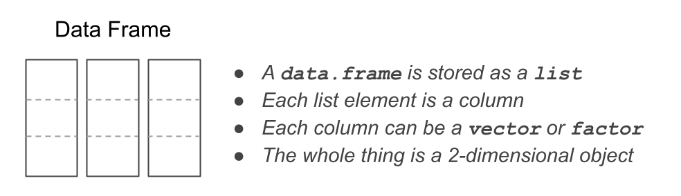
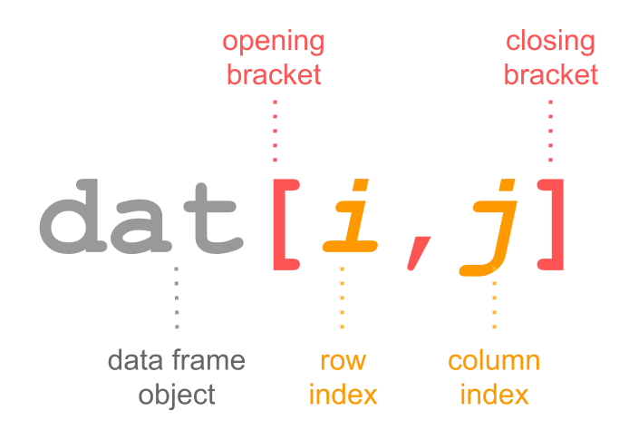
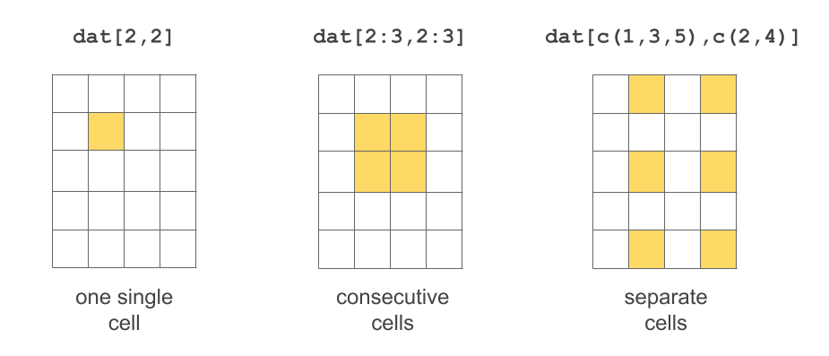
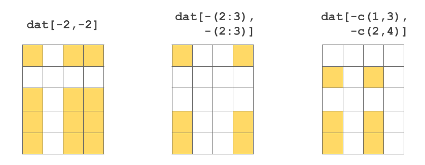
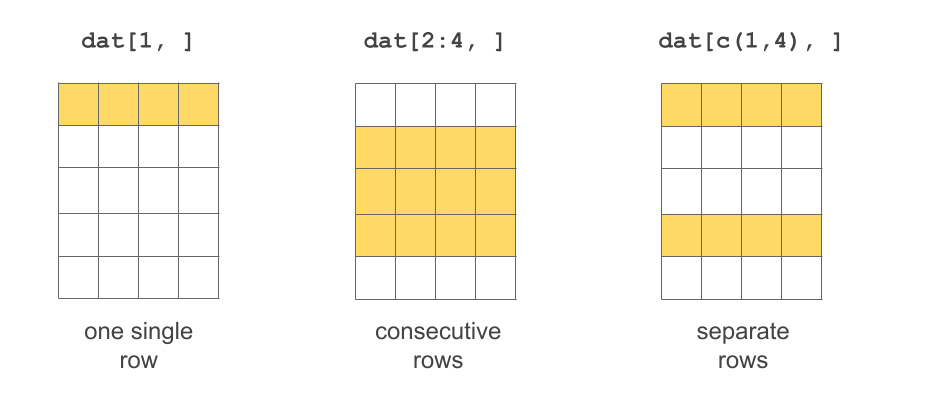
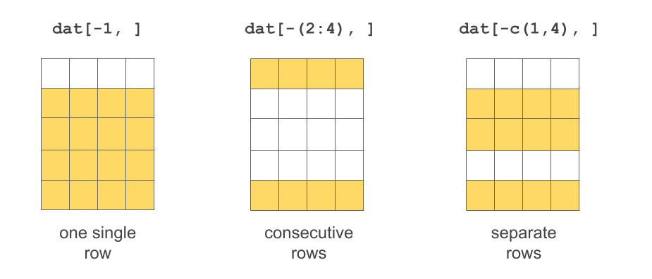
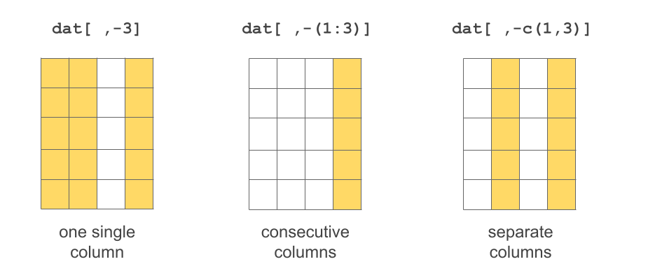

9 Data Frames
The most common format/structure for a data set is a tabular format: with rows and columns (like a spreadsheet). When your data is in this shape, most of the time you will work with R data frames (or similar rectangular structures like a "matrix", "table", "tibble", etc).
Learning how to manipulate data frames is among the most important data computing skills in R. Nowadays, there are two primary approaches for manipulating data frames. One is what I call the “traditional” or “classic” approach which is what I present in this chapter. The other is the “tidy” approach which you can think of as a modern version based on the tidy data framework mainly developed by Hadley Wickham. We leave the discussion of this alternative approach for later.
To make the most of the content covered in the next sections, I am assuming that you are familiar with the rest of data objects covered in the previous chapters of part “II Data Objects in R”.
9.1 R Data Frames
A data frame is a special type of R list. In most cases, a data frame is internally stored as a list of vectors or factors, in which each vector (or factor) corresponds to a column. This implies that columns in a data frame are typically atomic structures: all elements in a given column are of the same data type. However, since a data frame is a list, you can technically have any kind of object as a column. In practice, though, having data frames with columns that are not vectors or factors is something that does not make much sense.
From the data manipulation point of view, data frames behave like a hybrid object. On one hand, they are lists and can be manipulated like any other list using double brackets dat[[ ]] and dollar operator dat$name. On the other hand, because data frames are designed as tabular or 2-dimensional objects, they also behave like two-dimensional arrays or matrices, admitting bracket notation dat[ , ]. For these reasons, there is a wide array of functions that allows you to manipulate data frames in very convenient ways. But to the inexperienced user, all these functions may feel overwhelming.
9.2 Inspecting data frames
One of the basic tasks when working with data frames involves inspecting its contents. Specially in the early stages of data exploration, when dealing for the first time with a new data frame, you will need to inspect things like its overall structure, which includes its dimensions (number of rows and columns), the data types of its columns, the names of columns and rows, and also be able to take a peak to some of its first or last rows, and usually obtain a summary of each column.
Let’s see an example with one of the built-in data frames in R: mtcars. Just a few rows and columns of mtcars are displayed below:
mpg cyl disp hp drat wt
Mazda RX4 21.0 6 160 110 3.90 2.620
Mazda RX4 Wag 21.0 6 160 110 3.90 2.875
Datsun 710 22.8 4 108 93 3.85 2.320
Hornet 4 Drive 21.4 6 258 110 3.08 3.215
Hornet Sportabout 18.7 8 360 175 3.15 3.440The main function to explore the structure of not just a data frame, but of any kind of object, is str(). When applied to data frames, str() returns a report of the dimensions of the data frame, a list with the name of all the variables, and their data types (e.g. chr character, num real, etc).
str(mtcars, vec.len = 1)'data.frame': 32 obs. of 11 variables:
$ mpg : num 21 21 ...
$ cyl : num 6 6 ...
$ disp: num 160 160 ...
$ hp : num 110 110 ...
$ drat: num 3.9 3.9 ...
$ wt : num 2.62 ...
$ qsec: num 16.5 ...
$ vs : num 0 0 ...
$ am : num 1 1 ...
$ gear: num 4 4 ...
$ carb: num 4 4 ...The argument vec.len = 1 is optional but we like to use it because it indicates that just the first elements in each column should be displayed. Observe the output returned by str(). The first line tells us that mtcars is an object of class 'data.frame' with 32 observations (rows) and 11 variables (columns). Then, the set of 11 variables is listed below, each line starting with the dollar $ operator, followed by the name of the variable, followed by a colon :, the data mode (all numeric num variables in this case), and then a couple of values in each variable.
It is specially useful to check the data type of each column in order to catch potential issues and avoid disastrous consequences or bugs in subsequent stages.
Here’s a list of useful functions to inspect a data frame:
str(): overall structurehead(): first rowstail(): last rowssummary(): descriptive statisticsdim(): dimensionsnrow(): number of rowsncol(): number of columnsnames(): names of list elements (i.e. column names)colnames(): column namesrownames(): row namesdimnames(): list with column and row names
On a technical side, we should mention that a data frame is a list with special attributes: an attribute names for column names, an attribute row.names for row names, and of course its attribute class:
attributes(mtcars)$names
[1] "mpg" "cyl" "disp" "hp" "drat" "wt" "qsec" "vs" "am" "gear"
[11] "carb"
$row.names
[1] "Mazda RX4" "Mazda RX4 Wag" "Datsun 710"
[4] "Hornet 4 Drive" "Hornet Sportabout" "Valiant"
[7] "Duster 360" "Merc 240D" "Merc 230"
[10] "Merc 280" "Merc 280C" "Merc 450SE"
[13] "Merc 450SL" "Merc 450SLC" "Cadillac Fleetwood"
[16] "Lincoln Continental" "Chrysler Imperial" "Fiat 128"
[19] "Honda Civic" "Toyota Corolla" "Toyota Corona"
[22] "Dodge Challenger" "AMC Javelin" "Camaro Z28"
[25] "Pontiac Firebird" "Fiat X1-9" "Porsche 914-2"
[28] "Lotus Europa" "Ford Pantera L" "Ferrari Dino"
[31] "Maserati Bora" "Volvo 142E"
$class
[1] "data.frame"9.3 Creating data frames
Most of the (raw) data tables you will be working with will already be in some data file. However, from time to time you will face the need to create some sort of data table in R. In these situations, you will likely have to create such table with a data frame. So let’s look at various ways to “manually”” create a data frame.
Option 1: The primary option to build a data frame is with data.frame(). You pass a series of vectors (or factors), of the same length, separated by commas. Each vector (or factor) will become a column in the generated data frame. Preferably, give names to each column like in the example below:
dat <- data.frame(
name = c('Anakin', 'Padme', 'Luke', 'Leia'),
gender = c('male', 'female', 'male', 'female'),
height = c(1.88, 1.65, 1.72, 1.50),
weight = c(84, 45, 77, 49)
)
dat name gender height weight
1 Anakin male 1.88 84
2 Padme female 1.65 45
3 Luke male 1.72 77
4 Leia female 1.50 49Option 2: Another way to create data frames is with a list containing vectors or factors (of the same length), which you then convert into a data frame with data.frame():
# another way to create a basic data frame
lst <- list(
name = c('Anakin', 'Padme', 'Luke', 'Leia'),
gender = c('male', 'female', 'male', 'female'),
height = c(1.88, 1.65, 1.72, 1.50),
weight = c(84, 45, 77, 49)
)
tbl <- data.frame(lst)
tbl name gender height weight
1 Anakin male 1.88 84
2 Padme female 1.65 45
3 Luke male 1.72 77
4 Leia female 1.50 49Remember that a data.frame is nothing more than a list. So as long as the elements in the list (vectors or factors) are of the same length, we can simply convert the list into a data frame.
Keep in mind that in old versions of R (3.1.0 or older), data.frame() used to convert character vectors into factors. You can always check the data type of each column in a data frame with str():
str(tbl)'data.frame': 4 obs. of 4 variables:
$ name : chr "Anakin" "Padme" "Luke" "Leia"
$ gender: chr "male" "female" "male" "female"
$ height: num 1.88 1.65 1.72 1.5
$ weight: num 84 45 77 49In old versions of R, to prevent data.frame() from converting strings into factors, you had to use the argument stringsAsFactors = FALSE
# strings as strings, not as factors
# (for R ver 3.1.0 or older)
dat <- data.frame(
name = c('Anakin', 'Padme', 'Luke', 'Leia'),
gender = c('male', 'female', 'male', 'female'),
height = c(1.88, 1.65, 1.72, 1.50),
weight = c(84, 45, 77, 49),
stringsAsFactors = FALSE
)
str(dat)'data.frame': 4 obs. of 4 variables:
$ name : chr "Anakin" "Padme" "Luke" "Leia"
$ gender: chr "male" "female" "male" "female"
$ height: num 1.88 1.65 1.72 1.5
$ weight: num 84 45 77 499.4 Basic Operations with Data Frames
Now that you have seen some ways to create data frames, let’s discuss a number of basic manipulations of data frames. We will show you examples of various operations, and then you’ll have the chance to put them in practice with some exercises listed at the end of the chapter.
- Selecting table elements:
- select a given cell
- select a set of cells
- select a given row
- select a set of rows
- select a given column
- select a set of columns
- Adding a new column
- Deleting a column
- Renaming a column
- Moving a column
- Transforming a column
Let’s say you have a data frame dat with the following content:
dat <- data.frame(
name = c('Leia', 'Luke', 'Han'),
gender = c('female', 'male', 'male'),
height = c(1.50, 1.72, 1.80),
jedi = c(FALSE, TRUE, FALSE),
stringsAsFactors = FALSE
)
dat name gender height jedi
1 Leia female 1.50 FALSE
2 Luke male 1.72 TRUE
3 Han male 1.80 FALSE9.4.1 Selecting elements
The data frame dat is a 2-dimensional object: the 1st dimension corresponds to the rows, while the 2nd dimension corresponds to the columns. Because dat has two dimensions, the bracket notation involves working with data frames in this form: dat[ , ].

In other words, you have to specify values inside the brackets for the 1st index, and the 2nd index: dat[index1, index2].
Selecting cells

# select value in row 1 and column 1
dat[1,1][1] "Leia"# select value in row 2 and column 3
dat[2,3][1] 1.72# select values in these cells
dat[1:2,3:4] height jedi
1 1.50 FALSE
2 1.72 TRUEIt is also possible to exclude certain rows-and-columns by passing negative numeric indices:

Selecting rows

If no value is specified for index1 then all rows are included. Likewise, if no value is specified for index2 then all columns are included.
# selecting first row
dat[1, ] name gender height jedi
1 Leia female 1.5 FALSE# selecting third row
dat[3, ] name gender height jedi
3 Han male 1.8 FALSE
Selecting columns

# selecting second column
dat[ ,2][1] "female" "male" "male" # selecting columns 2 to 4
dat[ ,2:4] gender height jedi
1 female 1.50 FALSE
2 male 1.72 TRUE
3 male 1.80 FALSE
More Options to Access Columns

The dollar sign also works for selecting a column of a data frame using its name
mtcars$mpg [1] 21.0 21.0 22.8 21.4 18.7 18.1 14.3 24.4 22.8 19.2 17.8 16.4 17.3 15.2 10.4
[16] 10.4 14.7 32.4 30.4 33.9 21.5 15.5 15.2 13.3 19.2 27.3 26.0 30.4 15.8 19.7
[31] 15.0 21.4You don’t need to use quote marks, but you can if you want. The following calls are equivalent.
mtcars$'mpg'
mtcars$"mpg"
mtcars$`mpg`9.4.2 Adding a column
Perhaps the simplest way to add a column is with the dollar operator $. You just need to give a name for the new column, and assign a vector (or factor):
# adding a column
dat$new_column <- c('a', 'e', 'i')
dat name gender height jedi new_column
1 Leia female 1.50 FALSE a
2 Luke male 1.72 TRUE e
3 Han male 1.80 FALSE iAnother way to add a column is with the column binding function cbind():
# vector of weights
weight <- c(49, 77, 85)
# adding weights to dat
dat <- cbind(dat, weight)
dat name gender height jedi new_column weight
1 Leia female 1.50 FALSE a 49
2 Luke male 1.72 TRUE e 77
3 Han male 1.80 FALSE i 859.4.3 Deleting a column
The inverse operation of adding a column consists of deleting a column. This is possible with the $ dollar operator. For instance, say you want to remove the column new_column. Use the $ operator to select this column, and assign it the value NULL (think of this as NULLifying a column):
# deleting a column
dat$new_column <- NULL
dat name gender height jedi weight
1 Leia female 1.50 FALSE 49
2 Luke male 1.72 TRUE 77
3 Han male 1.80 FALSE 859.4.4 Renaming a column
What if you want to rename a column? There are various options to do this. One way is by changing the column names attribute:
# attributes
attributes(dat)$names
[1] "name" "gender" "height" "jedi" "weight"
$row.names
[1] 1 2 3
$class
[1] "data.frame"which is more commonly accessed with the names() function:
# column names
names(dat)[1] "name" "gender" "height" "jedi" "weight"Notice that dat has a list of attributes. The element names is the vector of column names.
You can directly modify the vector of names; for example let’s change gender to sex:
# changing rookie to rooky
attributes(dat)$names[2] <- "sex"
# display column names
names(dat)[1] "name" "sex" "height" "jedi" "weight"By the way: this approach of changing the name of a variable is very low level, and probably unfamiliar to most useRs.
9.4.5 Moving a column
A more challenging operation is when you want to move a column to a different position. What if you want to move salary to the last position (last column)? One option is to create a vector of column names in the desired order, and then use this vector (for the index of columns) to reassign the data frame like this:
reordered_names <- c("name", "jedi", "height", "weight", "sex")
dat <- dat[ ,reordered_names]
dat name jedi height weight sex
1 Leia FALSE 1.50 49 female
2 Luke TRUE 1.72 77 male
3 Han FALSE 1.80 85 male9.4.6 Transforming a column
A more common operation than deleting or moving a column, is to transform the values in a column. This can be easily accomplished with the $ operator. For instance, let’s say that we want to transform height from meters to centimeters:
# converting height to centimeters
dat$height <- dat$height * 100
dat name jedi height weight sex
1 Leia FALSE 150 49 female
2 Luke TRUE 172 77 male
3 Han FALSE 180 85 maleLikewise, instead of using the $ operator, you can refer to the column using bracket notation. Here’s how to transform weight from kilograms to pounds (1 kg = 2.20462 pounds):
# weight into pounds
dat[ ,"weight"] <- dat[ ,"weight"] * 2.20462
dat name jedi height weight sex
1 Leia FALSE 150 108.0264 female
2 Luke TRUE 172 169.7557 male
3 Han FALSE 180 187.3927 maleThere is also the transform() function which transform values interactively, that is, temporarily:
# transform weight to kgs
transform(dat, weight = weight / 0.453592) name jedi height weight sex
1 Leia FALSE 150 238.1576 female
2 Luke TRUE 172 374.2476 male
3 Han FALSE 180 413.1305 maletransform() does its job of modifying the values of weight but only temporarily; if you inspect dat you’ll see what this means:
# did weight really change?
dat name jedi height weight sex
1 Leia FALSE 150 108.0264 female
2 Luke TRUE 172 169.7557 male
3 Han FALSE 180 187.3927 maleTo make the changes permanent with transform(), you need to reassign them to the data frame:
# transform weight to inches (permanently)
dat <- transform(dat, weight = weight / 0.453592)
dat name jedi height weight sex
1 Leia FALSE 150 238.1576 female
2 Luke TRUE 172 374.2476 male
3 Han FALSE 180 413.1305 male9.5 Exercises
1) Consider the following data frame df:
first last gender born spell
1 Harry Potter male 1980 sectumsempra
2 Hermione Granger female 1979 alohomora
3 Ron Weasley male 1980 riddikulus
4 Luna Lovegood female 1981 episkeyWhat commands will fail to return the data of individuals born in 1980?
df[c(TRUE, FALSE, TRUE, FALSE), ]df[df[,4] == 1980, ]df[df$born == 1980]df[df$born == 1980, ]df[ ,df$born == 1980]
Show answer
# a) these options:
# (i) df[df$born == 1980]
# (v) df[ ,df$born == 1980]Select the command that does not provide information about the data frame
df:head(df)str(df)tail(df)rm(df)summary(df)
Show answer
# b) this option:
# (v) summary(df)- Your friend is trying to display the first three rows on columns 1 (
first) and 2 (last), by unsuccessfully using the following command. Why does the command print all columns?
df[1:3, 1 & 2] first last gender born spell
1 Harry Potter male 1980 sectumsempra
2 Hermione Granger female 1979 alohomora
3 Ron Weasley male 1980 riddikulusShow answer
# c) The command "df[1:3, 1 & 2]" displays all columns
# because "1 & 2" is a logical comparison that returns
# "TRUE", and therefore all columns are selected.- Write a command that would correctly display the first two columns.
Show answer
# c) any of these:
# df[1:3, 1:2]
# df[1:3, c(1, 2)]
# df[1:3, c('first', 'last')]- Write a command that would give you the following data from
df.
spell first
1 sectumsempra Harry
2 alohomora Hermione
3 riddikulus Ron
4 episkey LunaShow answer
# d) any of these
# df[ ,c('spell', 'first')]
# df[ ,c(5,1)]2) Consider the following data frame dat
first last gender title gpa
1 Jon Snow male lord 2.8
2 Arya Stark female princess 3.5
3 Tyrion Lannister male master 2.9
4 Daenerys Targaryen female khaleesi 3.7
5 Yara Greyjoy female princess NAOne of your friends wrote the following R code. Help your friend find all the errors and explain what’s wrong.
# value of 'first' associated to maximum 'gpa'
max_gpa <- max(dat$gpa, na.rm = TRUE)
which_max_gpa <- dat$gpa = max_gpa
dat$first(which_max_gpa)
# gpa of title lord
dat$gpa[dat[ ,title] = "lord"]
# median gpa (of each gender)
which_males <- dat$gender == 'male'
which_females <- dat$gender == 'female'
median_females <- median(dat$gpa[which_males])
median_males <- median(dat$gpa[which_males])Show answer
# There are five errors:
#
# dat$gpa = max_gpa should be dat$gpa == max_gpa
#
# dat$first(which_max_gpa) should be dat$first[which_max_gpa]
#
# dat$gpa[dat[ ,title] = "lord"], should use quotations
# for "title" and also use double equals in:
# dat$gpa[dat[ ,"title"] == "lord"]
#
# median_females <- median(dat$gpa[which_males]) should
# be: median_females <- median(dat$gpa[which_females])